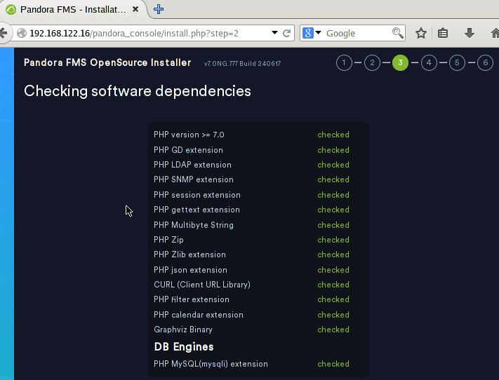

Projecte Final: Monitorización de Red y Servicios con Pandora FMS en GNS3
Estructura del Escenario en GNS3
Dispositivos y Red
NAT
Ubuntu Server (Servidor DHCP):
- Pandora FMS
Routers
- Cisco
- Asignar direcciones IP:
- Xarxa 1:
192.168.10.0/24.
- Xarxa 1:
- Mikrotik
- Asignar direcciones IP:
- Xarxa 2:
172.16.10.0/24.
- Xarxa 2:
Switch 1:
- Dispositivos conectados:
- Firefox (IP asignada por DHCP).
- VPC (IP asignada por DHCP).
- Ubuntu Desktop (IP reservada:
192.168.10.50, servidor web). - Windows 10 (IP reservada:
192.168.10.60, servicio de archivos).
Switch 2:
- Dispositivos conectados:
- Firefox (IP asignada por DHCP).
- VPC (IP asignada por DHCP).
- Ubuntu Desktop (IP reservada:
172.16.10.50, servidor MySQL). - Windows 10 (IP reservada:
172.16.10.60, servicio de archivos).
Configuración del Ubuntu Server
Configuración del netplan
sudo nano /etc/netplan/50-cloud-init.yaml
sudo netplan apply
Configuración de Pandora FMS
- Instalación de depenencias:
Tendremos que instalar las siguientes dependencias:
- apache2
- mariaDB
- php
sudo apt install apache2 mariadb-server mariadb-client php
- Configuración de mariaDB
Hay que tener en cuenta que vamos a acceder desde una máquina diferente al server,por lo que tenenmos que editar el archivo de configuración
Buscaremos la linea de bind-address y le pondremos 0.0.0.0
sudo nano /etc/mysql/mariadb.conf.d/50-server.cnf
bind-address: 0.0.0.0
- Creación de la base de datos y el usuario
Vamos a crear la base de datos y el usuario con el cuál accederemos desde el cliente
sudo mysql -u root -p
CREATE DATABASE pandora;
CREATE USER 'pandora'@'%' IDENTIFIED BY 'tu_password_segura';
GRANT ALL PRIVILEGES ON pandora.* TO 'pandora'@'%';
FLUSH PRIVILEGES;
EXIT;
- Descarga e instalación de Pandora FMS
Para ello he clonado el repositorio que github de pandora y dado permisos a este
git clone https://github.com/pandorafms/pandorafms.git
sudo mv pandorafms/pandora_console /var/www/html/pandora_console
sudo chown -R www-data:www-data /var/www/html/pandora_console
sudo chmod -R 755 /var/www/html/pandora_console
- Configuración de Apache
Para ello creamos y editamos el archivo de configuración y lo habilitamos
sudo cp 000-default.conf pandora.conf
sudo nano pandora.conf
sudo a2ensite pandira.conf
sudo systemctl reload apache2
sudo systemctl restart apache2
sudo systemctl status apache2
- Finalizar instalacion en el navegador
Una vez hecha la instalación y configuración de apache, podremos acceder a través de un navegador buscando lo siguiente:
http://192.168.122.16/pandora_console
Teniendo en cuenta que la dirección 192.168.122.16 es la ip del servidor y pandora_console la carpeta que hemos movido a /var/www/html

Una vez dentro simplemente seguimos los pasos de la instalación, nos indicará si hay alguna dependencia que no esté instalada.

Y nos preguntará acerca de los datos de la base de datos.

Cuando encuentre la base de datos se instalará


Al volver al servidor y entrar en la carpeta de pandora_console veremos el archivo install.php que se ha creado con la instalación, este habrá que eliminarlo
cd /var/www/html/pandora_console
sudo rm install.php

- Instalación y configuración del serrvidor de Pandora FMS
Configuración de los routers
Router Cisco
- Configuración de las interficies
Primero configuraremos la interficie g0/0 para que tenga IP por dhcp
config t
interface g0/0
no shutdown
ip address dhcp
ip nat outside
exit (X2)
write
copy run start
En la interficie g1/0 la configuraremos con una IP estática
config t
interface g0/0
no shutdown
ip address 192.168.10.1 255.255.255.0
ip nat inside
exit (X2)
write
copy run start
Y ya tendriamos las dos interficies con IPs, para ver la configuración de las interficies y comprobar que lo hayamos hecho bien usaremos el siguiente comando:
show ip interface brief
FOTOOOOOOOOOOOOOOOOOOOOOOOOOOOOOOOOOOOO
- Configuración DHCP
Vamos a crear un "POOL" ,que es el conjunto de direcciones que vamos a usar para asignarselas a los VPCs, y a configurarlo para que de las direcciones.
config t
ip dhcp pool POOL1
network 192.168.10.0 255.255.255.0
dns-server 8.8.8.8
default-router 192.168.10.1
exit
ip dhcp expluded-address 192.168.10.1 192.168.10.9
ip dhcp expluded-address 192.168.10.31 192.168.10.254
write
copy run start
Donde:
- network --> es la direcion de red en la que vas a hacer el pool
- dns-server --> resolucion de nombres
- Yo he puesto el de google, si tienes uno propio puedes ponerlo
- default-router --> es la direccion por la cual saldrán
- en mi caso es la direccion
192.168.10.1
- en mi caso es la direccion
-
ip dhcp excluded-address --> son las direcciones ip que NO vamos a asignar a los equipos
- Yo queria asignar de la
192.168.10.10a la192.168.10.30por lo que he excluido todas las demás
- Yo queria asignar de la
-
Reserva de direcciones IP
Para reservar direcciones IP tendremos que crear un pool y decirle cual es la ip que queremos asignar al igual que la dirección MAC del equipo al cual le asignaremos dicha dirección reservada.
config t
ip dhcp pool UbD
host 192.168.10.50 255.255.255.0
client-identifier 010c.bf1c.8700.00
default-router 192.168.10.1
dns-server 8.8.8.8
exit
copy run start
Donde:
- UbD --> es el nombre que le asignamos al pool
- dns-server --> resolucion de nombres
- Yo he puesto el de google, si tienes uno propio puedes ponerlo
- default-router --> es la dirección por la cual saldrán
- en mi caso es la
192.168.10.1
- en mi caso es la
- host --> es la dirección que queremos reservar para un equipo
- Yo queria asignar de la
192.168.10.50y la192.168.10.60
- Yo queria asignar de la
- client-identifier --> es la dirección MAC con un
01delante de esta y agrupada en 4, menos los 2 ultimos.
Haremos los mismos pasos para todos los equipos que queramos reservales direcciones. En mi caso yo lo queria para el Ubuntu Desktop y para el Windows 10.
config t
ip dhcp pool W11
host 192.168.10.60 255.255.255.0
client-identifier 010c.800f.2f00.00
default-router 192.168.10.1
dns-server 8.8.8.8
exit
copy run start
FOTOOOOOOOOOOOOOOOOOOOOOOOOOOOOOOOOOOOO FOTOOOOOOOOOOOOOOOOOOOOOOOOOOOOOOOOOOOO
- Enrutamiento entre redes
Vamos a indicarle al router cómo llegar a la red del otro router, vamos a ejecutar los siguientes comandos:
config t
ip route 172.16.10.0 255.255.255.0 192.168.122.212
exit
write
copy run start
Le estamos indicando al router que el tráfico que vaya a la red 172.16.10.0/24 debe entrar por la interfaz 192.168.122.212 (que es la interfaz del router mikrotik).
show ip route
FOTOOOOOOOOOOOOOOOOOOOOOOOOOOOOOOOOOOOO
- Comprobar la funcionalidad
Una vez hayamos hecho todo esto ya tendriamos la configuración terminada.
Y cuando le digamos al VPC una direccion por dhcp nos dará una dentro del rango especificado. Además podrá hacerle ping al VPC2 sin problemas.
FOTOOOOOOOOOOOOOOOOOOOOOOOOOOOOOOOOOOOO
Router Mikrotik
Antes de emepzar la configuración, me gusta ponerle nombre a las interfaces, ya que asi trabajo más rápida y cómodamente.
En el apartado de Interfaces podemos asignarles nombre.
- Configuración de las interficies
Vamos a asignarle IPs a las interficies, veremos que la IP asignada por dhcp no va ha hacer falta configurarla, por lo que solo hará falta configurar la interficie ether2.
Iremos al apartado IP > Addresses
FOTOOOOOOOOOOOOOOOOOOOOOOOOOOOOOOOOOOOO
- Configuración DHCP
Vamos al apartado IP > DHCP Server y en el botón de DHCP Setup podremos configurar el pool de direcciones, DNS, red, etc.
Para poder ver el pool de direcciones entraremos en el apartado IP > Pool
FOTOOOOOOOOOOOOOOOOOOOOOOOOOOOOOOOOOOOO
- Reserva de direcciones IP
Para reservar direcciones IP tendremos entrar en IP > DHCP Server > Leases, aquí clicamos al + y especificamos la ip que queremos reservar y la MAC del equipo.
FOTOOOOOOOOOOOOOOOOOOOOOOOOOOOOOOOOOOOO
- Enrutamiento entre redes
Vamos a indicarle al router cómo llegar a la red del otro router, entraremos en IP > Routes y agregaremos una nueva ruta especificando los siguiente:
Dst.Address --> 192.168.10.0/24
Gateway --> 192.168.122.254
FOTOOOOOOOOOOOOOOOOOOOOOOOOOOOOOOOOOOOO
- NAT configuration
Para poder salir a internet necesitamos configurar el nat, para ello iremos al apartado IP > Firewall > NAT, ahí clicaremos en el + y especificaremos lo siguiente:
chain --> srcnat
Out.Interface --> ether1_dhcp (que es la interfaz por la que podemos salir a internet)
Action --> masquerade

- Comprobar la funcionalidad
Una vez terminada la configuración entraremos en el VPC2 y comprobaremos si nos asigna una IP por DHCP dentro del pool de direcciones que hemos especificado.
FOTOOOOOOOOOOOOOOOOOOOOOOOOOOOOOOOOOOOO
Configuración del servidor web
- Instalación de apache
sudo apt update
sudo apt install apache2
- Creación del index.html
Primero crearemos una carpeta en el directorio /var/www/html para tener el archivo index.html donde editaremos a nuestro gusto la página web sin equivocarnos de índice.
cd /var/www/html
sudo mkdir marina
cd marina
sudo nano index.html
FOTOOOOOOOOOOOOOOOOOOOOOOOOOOOOOOOOOOOO
- Creación del archivo de configuración
Ahora crearemos y editaremos el archivo de configuración.
cd /etc/apache2/sites-available
sudo cp 000-default.conf marina.conf
sudo nano marina.conf
FOTOOOOOOOOOOOOOOOOOOOOOOOOOOOOOOOOOOOO
Una vez creado y editado el archivo de configuración, habilitamos la pàgina web
cd /etc/apache2/sites-available
sudo a2ensite marina.conf
FOTOOOOOOOOOOOOOOOOOOOOOOOOOOOOOOOOOOOO
Antes de poder acceder a ella por el nombre que le hemos dado, en este caso www.marina.com debemos hacer al equipo que la propia máquina pueda resolver el nombre, esto lo especificaremos en /etc/hosts
sudo nano /etc/hosts
192.168.10.50 www.marina.com
Donde:
- 192.168.10.50 --> es la ip de la propia máquina
- www.marina.com --> el nombre que buscaremos en el navegador
FOTOOOOOOOOOOOOOOOOOOOOOOOOOOOOOOOOOOOO